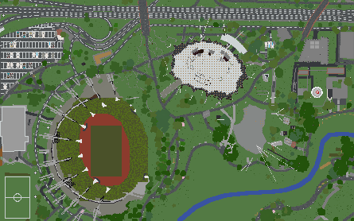
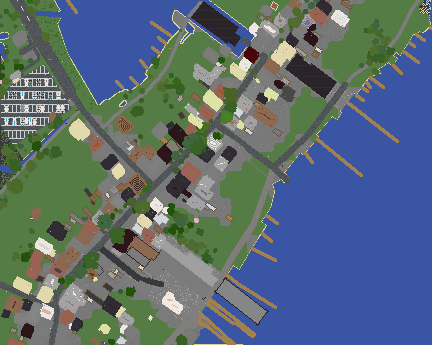

01INPUT / 真实地点
收集开放地理数据
输入经纬度范围；读取 OSM 建筑、道路、水系，叠加 DEM 高程、土地覆盖、树冠和可选地标模型。
得到：不同来源、不同尺度的空间要素
01 / TRUE WORLD VIEW→MUNICH
左侧 3D 用于下载前验收；真正结果是完整 Minecraft Java 世界包。它包含 level.dat、Region、地图数据和生成元数据，解压后放入游戏存档目录即可打开。
来源：本机 Java Anvil region
范围：48.1715,11.5430,48.1765,11.5550
边界：几何忠实读取方块；网页色板按方块名归类，不宣称复刻 Minecraft 原版材质。
02 / PRINCIPLE & USE CASES
它不是地图查看器，也不是游戏编辑器。它把分散的开放地理数据，按可解释的规则编译成可以继续进入、修改和复用的方块世界。
输入经纬度范围；读取 OSM 建筑、道路、水系，叠加 DEM 高程、土地覆盖、树冠和可选地标模型。
得到：不同来源、不同尺度的空间要素把标签解释成道路、建筑、桥梁和植被规则；补全缺失高度与材质，并处理道路贴地、水体雕刻和对象避让。
核心：地理语义 → 方块放置规则按 Chunk 写入 Minecraft Java、Bedrock 或 Luanti 世界；结果可以进入游戏、人工精修、添加玩法或交给其他转换器。
得到：世界存档，而不是一张图片Java .mca 世界→解析 Block State→合并可见网格→Three.js 3D
每个场景都从同一个“世界骨架”出发，价值来自后续内容和交互，而不是下载动作本身。
怎么操作：把世界放进 Minecraft，修正建筑、布置出生点，再添加任务、道具、NPC 或多人插件。
交付结果 · 可玩的城市服、剧情地图或活动世界怎么操作：像本页一样解析世界区块，转换成浏览器网格，再加入行走、点击建筑、路线和在线编辑。
交付结果 · 不安装 Minecraft 也能访问的 Web 3D怎么操作：先生成校园或历史区域，再由教师加入讲解点、路线、问答和安全演练流程。
交付结果 · 有教学内容的沉浸式空间课程怎么操作：用自动底图测试尺度、路线和玩法布局，再由设计师替换材质、调整结构和补充细节。
交付结果 · 游戏和虚拟活动的低成本场景初稿03 / BUILD IT FROM ZERO
这里有两条相接但不混淆的流水线：Arnis 负责把地理数据编译成游戏世界；本项目增加一个只读适配器，把世界存档转换成浏览器可高效绘制的网格。
给出经纬度 bbox、比例和 geo-terrain / geo-only / terrain-only。
获取 OSM、Overture、高程与地表数据，生成 level.dat、Region 和 Chunk。
构建脚本解压 Region Chunk，读取 Section 调色板和压缩后的 Block State。
OUTPUT · 方块坐标↓剔除被遮挡的内部面，再用贪心合并相邻同材质矩形，降低浏览器负担。
OUTPUT · QUAD BIN↓按材质建立 BufferGeometry，加入相机、光照、缩放、旋转和能力回退。
OUTPUT · 可交互 3Dsource/arnis/scripts/export-world-web.mjs + demo/world-viewer.jsnpm install
npm run samples # 运行 Arnis，生成包含慕尼黑的 Java 世界
npm run world:web # 解析最新世界的 .mca / NBT / Block State
npm run build # 打包 Three.js 查看器与静态页面
npm run serve # 打开 http://127.0.0.1:4177也可用 ARNIS_WORLD_DIR 指向任意包含 metadata.json 与 region/ 的 Arnis Java 世界目录。
ACTUAL RUN 01→JAVA ANVIL
PNG 不是输入，也不会再被拿去“生成 3D”。它是 Arnis 在写出 Minecraft 世界后，通过原生 --map-preview 追加生成的快速检查图。

00 / ORIGINAL SAMPLE SUITE
五个样例由当前本地 Arnis 3.1.0 真正生成；最后一项来自上游仓库 README 的官方游戏内截图。每项都会明确标记证据类型。

INTERACTIVE MODEL→NOT OUTPUT
下面是数据层关系模型，用来解释高程、道路、建筑、水体与植被如何叠加；它不作为原库效果证据。
01 / CAPABILITY SURFACE
选择能力域，查看输入、生成结果、关键机制与当前边界。每个结论都链接到对应源码。
车道宽度、路面、人行道、路灯、交通信号、铁路、地铁、机场与停车场。
楼层、材质、立面、窗户、屋顶、建筑分部，以及可选的模板化室内与战利品。
结构识别、引桥、桥面、支撑、道路与铁路隧道，以及跨处理器的空间避让。
湖泊、河流、海湾、码头、水深雕刻、平静水面与遥感海岸线修复。
车辆、船、飞机、起重机、风机、喷泉、体育设施、广告、应急与电力设施。
没有真实标签时会使用确定性规则推断，因此适合可视化与内容生产，不适合工程测量。
02 / COMPILER PIPELINE
点击任一阶段，观察数据从地理来源到世界文件发生了什么。
03 / COMMAND LAB
页面只生成命令，不请求地图服务。复制后可在已获取的上游源码目录中运行。
预计表达完整城市对象 + 真实地形
输出目标Minecraft Java Anvil 世界
外部请求OSM · Overture · DEM · ESA · Canopy
04 / FIT & BOUNDARY
家乡复刻、城市服、地理教学、防灾场景和虚拟活动底图。
在人工精修前自动搭好道路、建筑、地形与生态环境。
方块离散化、开放数据缺失和程序推断都不满足工程精度。
当前是批处理世界生成器，没有持续更新、传感器或仿真运行时。
05 / EXTENSION MAP
高程源是真正的 trait 扩展点；元素处理和世界输出仍有中心分派与 Minecraft 语义耦合。
实现 ElevationProvider，声明覆盖范围、原生分辨率和获取方式。
最清晰的现成扩展点增加处理器、材质、屋顶、植被与规则，同时接入中心分派。
模块独立，注册仍需改源码让用户修正轮廓、高度、道路和材质，形成自动生成后的人工闭环。
产品价值通常高于继续堆规则先抽出 GeoIR 与 SceneIR，再把 Minecraft Block 写入改造成可替换 World Sink。
需要解除领域模型耦合建立地理对象到 Region 的索引，并把全局后处理拆成显式任务图。
适合规模化服务阶段06 / WHY THE LIBRARY MATTERS
意义不在于多做一张地图图像，而在于把分散、缺失、尺度不一的开放地理数据，确定性地编译成可以进入、修改、复制和继续创作的空间底座。
直接 fork，优先定制数据源、区域风格、规则和人工编辑能力。
复用算法与规则经验，抽取自己的 GeoIR、SceneIR 和多后端接口。
仅作为低成本可视化基线；另建精度、时态、仿真与数据治理体系。
07 / SOURCE SNAPSHOT